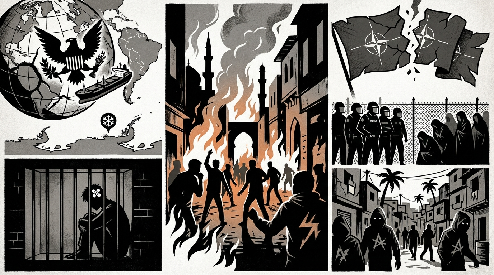

The Daily Globe: U.S. Military Intervention in Venezuela, Jan 6 Anniversary Debates, and Bolsonaro Persecution Claims
Published on 2026-01-08

World
- U.S. Military Intervention in Venezuela
U.S. operation to remove Maduro sparks global outrage over imperialism, oil grabs, and sovereignty violations.
- Israel-Iran Nuclear Tensions
Rumors of Israeli nuclear strike on Iran amid protests and Mossad ops fuel WWIII fears.
- U.S. Greenland Acquisition Push
U.S. pressuring Denmark for Arctic control ignites colonialism debates.
USA
- Jan 6 Anniversary Debates
Polarization over Capitol events, pardons, and 'insurrection' narratives.
- Venezuela Protests in U.S. Cities
Anti-war rallies against presidential powers in Salt Lake City.
- Minneapolis ICE Shooting
Self-defense claims vs. media outrage fears.
Brazil
- Bolsonaro Persecution Claims
Michelle Bolsonaro accuses judiciary of bias against opponents.
- Anti-US Protests for Venezuela
Solidarity rallies against Maduro 'kidnapping'.
- SUS Intelligent Hospital Launch
Lula/Dilma sign historic public health project amid spending debates.
Topic Index
- military-intervention
- nuclear-tensions
- arctic-sovereignty
- jan6-anniversary
- anti-war-protests
- immigration-enforcement
- political-persecution
- geopolitical-solidarity